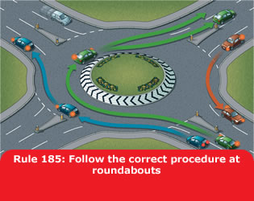
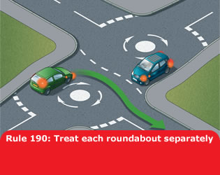

4. Roundabouts (184 to 190)
184
On approaching a roundabout take notice and act on
all the information available to you, including traffic signs,
traffic lights and lane markings which direct you into the correct
lane. You should
- use Mirrors – Signal – Manoeuvre at
all stages
- decide as early as possible which exit you need to take
- give an appropriate signal (see Rule 186, below). Time your
signals so as not to confuse other road users
- get into the correct lane
- adjust your speed and position to fit in with traffic conditions
- be aware of the speed and position of all the road users around
you.
185
When reaching the roundabout you should
- give priority to traffic approaching from your right, unless
directed otherwise by signs, road markings or traffic lights
- check whether road markings allow you to enter the roundabout
without giving way. If so, proceed, but still look to the right
before joining
- watch out for all other road users already on the roundabout; be
aware they may not be signalling correctly or at all
- look forward before moving off to make sure traffic in front has
moved off.

186
Signals and position
When taking the first exit to the left, unless signs or markings
indicate otherwise
- signal left and approach in the left-hand lane
- keep to the left on the roundabout and continue signalling left
to leave.
When taking an exit to the right or going full circle, unless signs
or markings indicate otherwise
- signal right and approach in the right-hand lane
- keep to the right on the roundabout until you need to change
lanes to exit the roundabout
- signal left after you have passed the exit before the one you
want.
When taking any intermediate exit, unless signs or markings indicate
otherwise
- select the appropriate lane on approach to and on the roundabout
- you should not normally need to signal on approach
- stay in this lane until you need to alter course to exit the
roundabout
- signal left after you have passed the exit before the one you
want.
When there are more than three lanes at the entrance to a
roundabout, use the most appropriate lane on approach and through it.
187
In all cases watch out for and give plenty of room
to
- pedestrians who may be crossing the approach and exit roads
- traffic crossing in front of you on the roundabout, especially
vehicles intending to leave by the next exit
- traffic which may be straddling lanes or positioned incorrectly
- motorcyclists
- cyclists and horse riders who may stay in the left-hand lane and
signal right if they intend to continue round the roundabout. Allow
them to do so
- long vehicles (including those towing trailers). These might have
to take a different course or straddle lanes either approaching or
on the roundabout because of their length. Watch out for their
signals.
188
Mini-roundabouts. Approach these in the same way as
normal roundabouts. All vehicles MUST pass round the
central markings except large vehicles which are physically incapable
of doing so. Remember, there is less space to manoeuvre and less time
to signal. Avoid making U-turns at mini-roundabouts. Beware of others
doing this.
Laws RTA 1988 sect 36 & TSRGD regs 10(1) &
16(1)
189
At double mini-roundabouts treat each roundabout separately and give
way to traffic from the right.
190
Multiple roundabouts. At some complex junctions,
there may be a series of mini-roundabouts at each intersection. Treat
each mini-roundabout separately and follow the normal rules.
